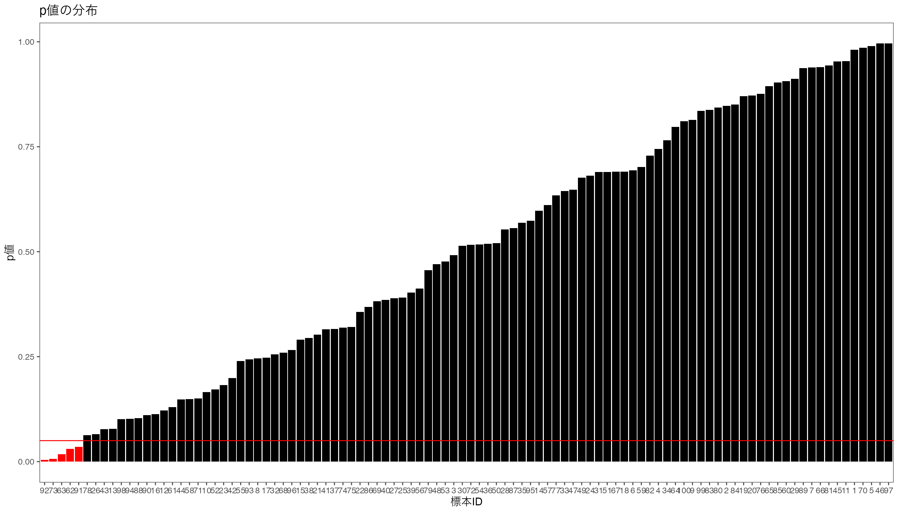
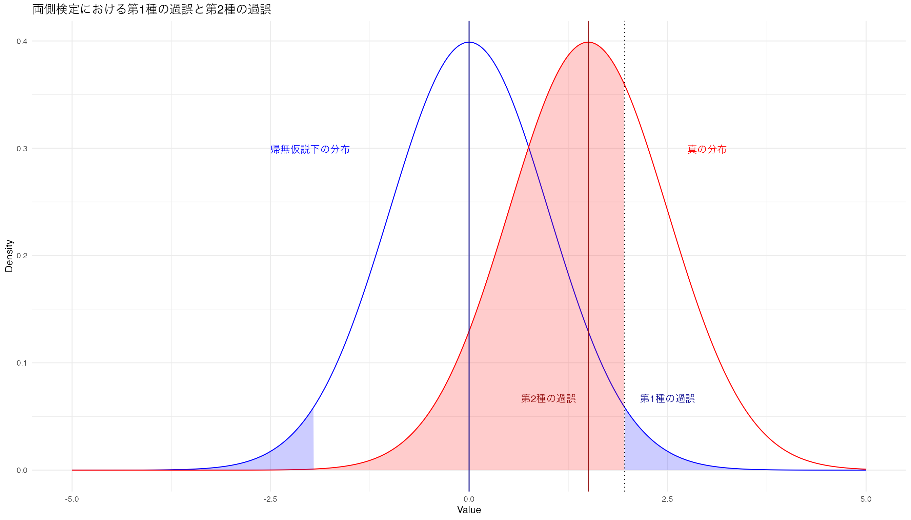

# 正規分布の確率密度関数dnorm_with_mean_sd <-function(x, mean =0, sd =1) {sqrt(1/(2*pi*sd^2))*exp(-((x - mean)^2)/(2*sd^2))}# パラメータの設定mu1 <-0# 帰無仮説の平均sd1 <-1# 帰無仮説の標準偏差mu2 <-1.5# 対立仮説の平均sd2 <-1# 対立仮説の標準偏差alpha =0.025# サンプルデータを生成x <-seq(-5, 5, by =0.01)df <-data.frame(x = x,dnorm1 =dnorm_with_mean_sd(x, mean = mu1, sd = sd1),dnorm2 =dnorm_with_mean_sd(x, mean = mu2, sd = sd2))# ggplotを使って描画g <-ggplot(df, aes(x = x)) +geom_line(aes(y = dnorm1), color ="blue") +geom_line(aes(y = dnorm2), color ="red")g <- g +geom_area(data =subset(df, x >qnorm(1-alpha, mu1, sd1)),aes(y = dnorm1), fill ="blue", alpha =0.2)g <- g +geom_area(data =subset(df, x <qnorm(alpha, mu1, sd1)),aes(y = dnorm1), fill ="blue", alpha =0.2)g <- g +geom_area(data =subset(df, x >qnorm(alpha, mu1, sd1) & x <qnorm(1-alpha, mu1, sd1)),aes(y = dnorm2), fill ="red", alpha =0.2) +theme_minimal() +labs(x ="Value", y ="Density",title ="両側検定における第1種の過誤と第2種の過誤")g <- g +geom_vline(xintercept =qnorm(1-alpha), linetype="dotted")g <- g +geom_vline(xintercept = mu1, color ="darkblue")g <- g +geom_vline(xintercept = mu2, color ="darkred")g <- g +annotate("text", x = mu1 +2.5, y =max(df$dnorm1) /6,label ="第1種の過誤", color ="darkblue", family ="HiraKakuProN-W3") +annotate("text", x = mu2 -0.5, y =max(df$dnorm2) /6,label ="第2種の過誤", color ="darkred", family ="HiraKakuProN-W3")g <- g +annotate("text", x = mu1 -2, y =max(df$dnorm1)-0.1,label ="帰無仮説下の分布", color ="blue", family ="HiraKakuProN-W3" ) +annotate("text", x = mu2 +1.5, y =max(df$dnorm2) -0.1,label ="真の分布", color ="red", family ="HiraKakuProN-W3")print(g)

有意水準を小さくする
帰無仮説が正しいときに帰無仮説を棄却する確率である第1種の過誤\(\alpha\)を小さくする。
Rコード
alpha =0.005# サンプルデータを生成x <-seq(-5, 5, by =0.01)df <-data.frame(x = x,dnorm1 =dnorm_with_mean_sd(x, mean = mu1, sd = sd1),dnorm2 =dnorm_with_mean_sd(x, mean = mu2, sd = sd2))# ggplotを使って描画g <-ggplot(df, aes(x = x)) +geom_line(aes(y = dnorm1), color ="blue") +geom_line(aes(y = dnorm2), color ="red")g <- g +geom_area(data =subset(df, x >qnorm(1-alpha, mu1, sd1)),aes(y = dnorm1), fill ="blue", alpha =0.2)g <- g +geom_area(data =subset(df, x <qnorm(alpha, mu1, sd1)),aes(y = dnorm1), fill ="blue", alpha =0.2)g <- g +geom_area(data =subset(df, x >qnorm(alpha, mu1, sd1) & x <qnorm(1-alpha, mu1, sd1)),aes(y = dnorm2), fill ="red", alpha =0.2) +theme_minimal() +labs(x ="Value", y ="Density",title ="両側検定における第1種の過誤と第2種の過誤")g <- g +geom_vline(xintercept =qnorm(1-alpha), linetype="dotted")g <- g +geom_vline(xintercept = mu1, color ="darkblue")g <- g +geom_vline(xintercept = mu2, color ="darkred")g <- g +annotate("text", x = mu1 +2.5, y =max(df$dnorm1) /6,label ="第1種の過誤", color ="darkblue", family ="HiraKakuProN-W3") +annotate("text", x = mu2 -0.5, y =max(df$dnorm2) /6,label ="第2種の過誤", color ="darkred", family ="HiraKakuProN-W3")g <- g +annotate("text", x = mu1 -2, y =max(df$dnorm1)-0.1,label ="帰無仮説下の分布", color ="blue", family ="HiraKakuProN-W3" ) +annotate("text", x = mu2 +1.5, y =max(df$dnorm2) -0.1,label ="真の分布", color ="red", family ="HiraKakuProN-W3")print(g)

片側検定の場合
Rコード
# 正規分布の確率密度関数dnorm_with_mean_sd <-function(x, mean =0, sd =1) {sqrt(1/(2*pi*sd^2))*exp(-((x - mean)^2)/(2*sd^2))}# パラメータの設定mu1 <-0# 帰無仮説の平均sd1 <-1# 帰無仮説の標準偏差mu2 <-1# 対立仮説の平均sd2 <-1# 対立仮説の標準偏差# サンプルデータを生成x <-seq(-5, 5, by =0.01)df <-data.frame(x = x,dnorm1 =dnorm_with_mean_sd(x, mean = mu1, sd = sd1),dnorm2 =dnorm_with_mean_sd(x, mean = mu2, sd = sd2))# ggplotを使って描画g <-ggplot(df, aes(x = x)) +geom_line(aes(y = dnorm1), color ="blue") +geom_line(aes(y = dnorm2), color ="red") +geom_area(data =subset(df, x <qnorm(0.05, mean = mu1, sd = sd1)),aes(y = dnorm1), fill ="blue", alpha =0.2) +geom_area(data =subset(df, x >qnorm(0.05, mean = mu1, sd = sd1)),aes(y = dnorm2), fill ="red", alpha =0.2) +theme_minimal() +labs(x ="Value", y ="Density",title ="Visualization of Type I and Type II Errors") +annotate("text", x = mu1 -2.5, y =max(df$dnorm1) /3,label ="Type I Error", color ="blue") +annotate("text", x = mu2 +2.5, y =max(df$dnorm2) /3,label ="Type II Error", color ="red")g <- g +geom_vline(xintercept = mu1, color ="darkblue")g <- g +geom_vline(xintercept = mu2, color ="darkred")print(g)